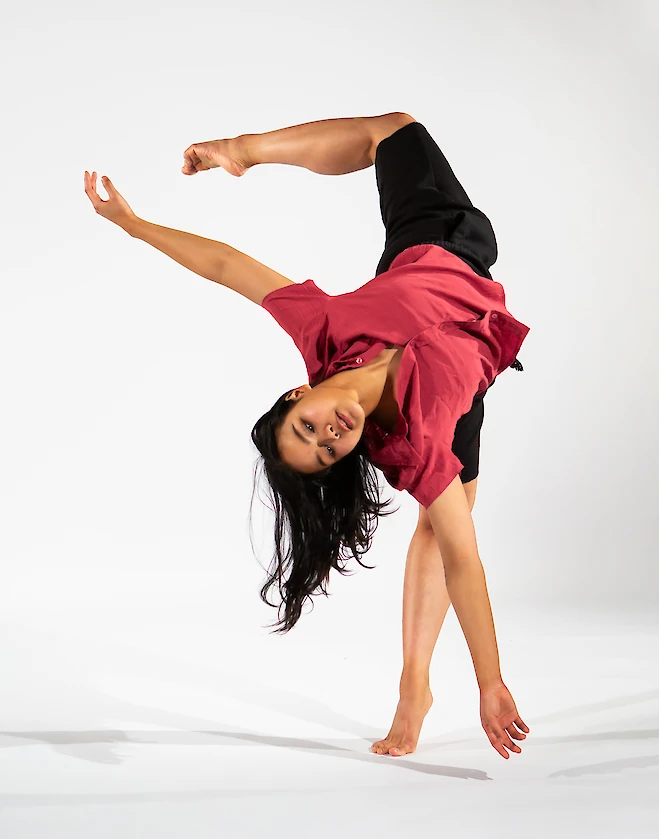
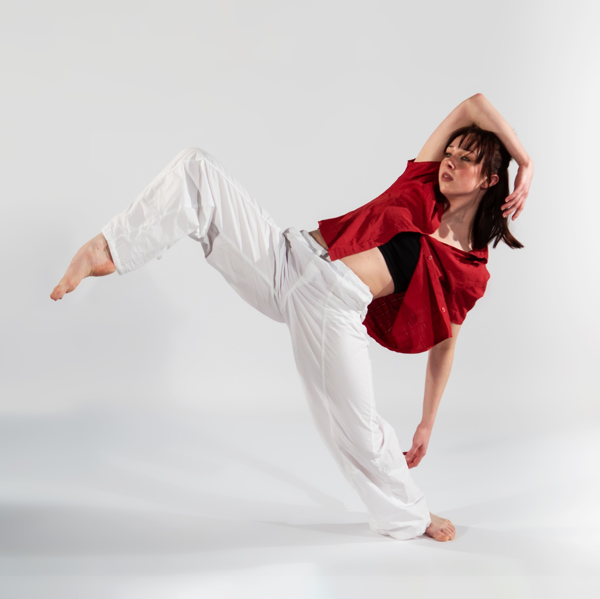
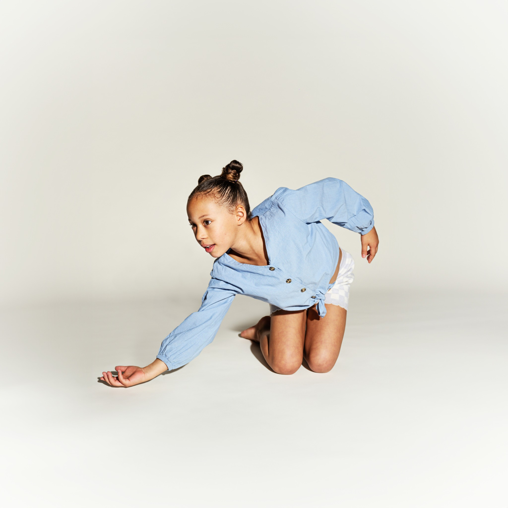
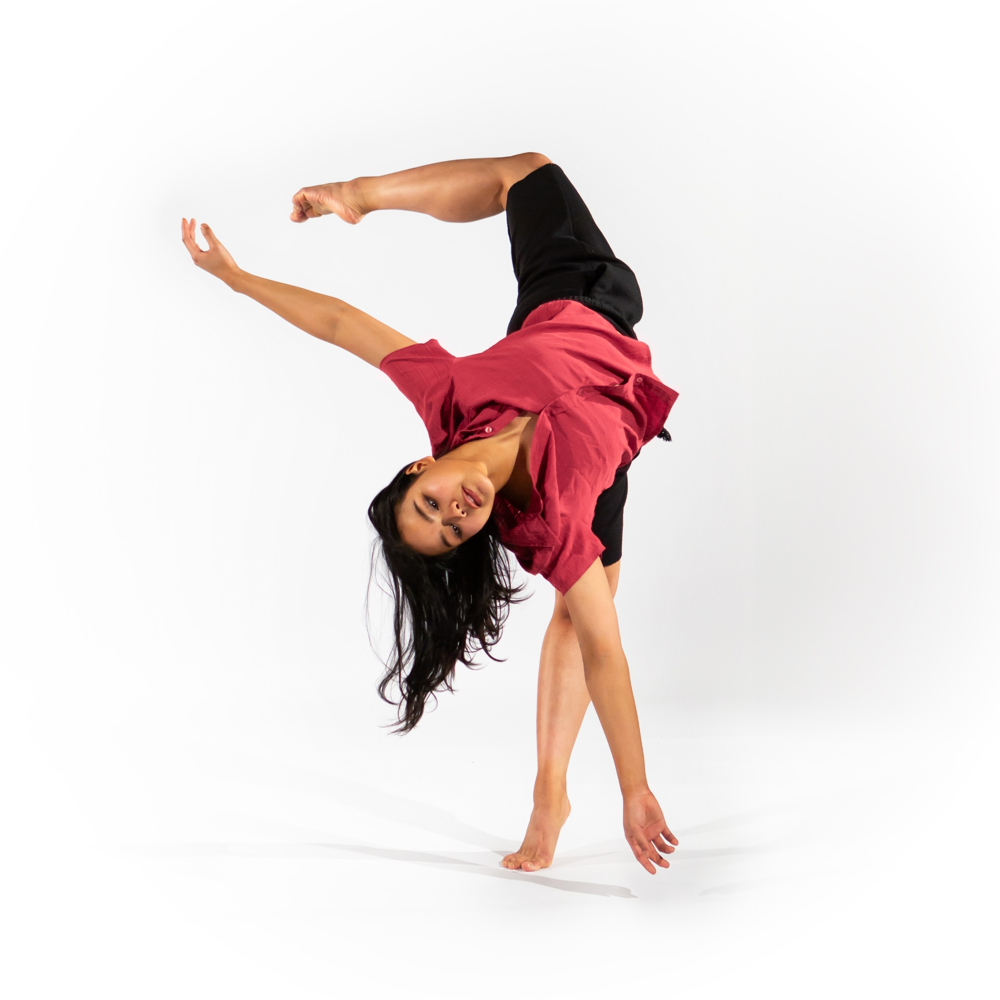
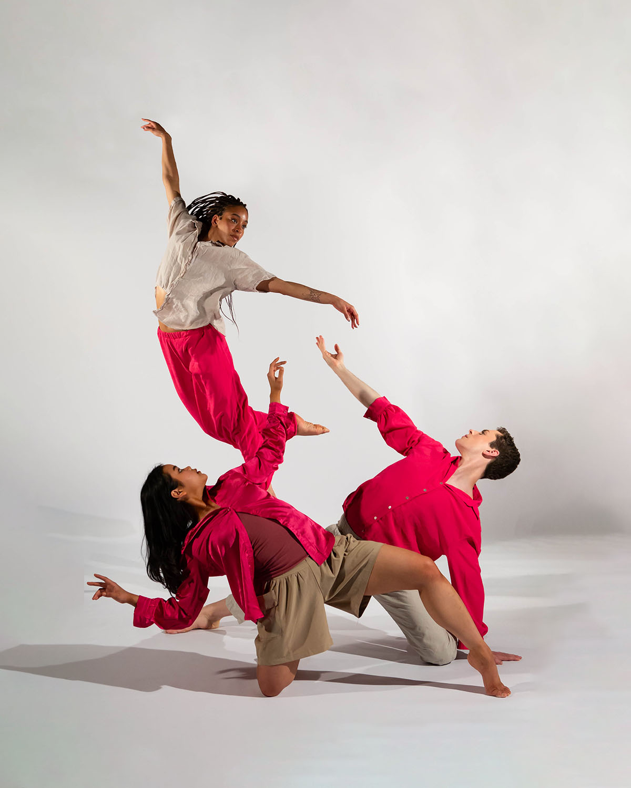
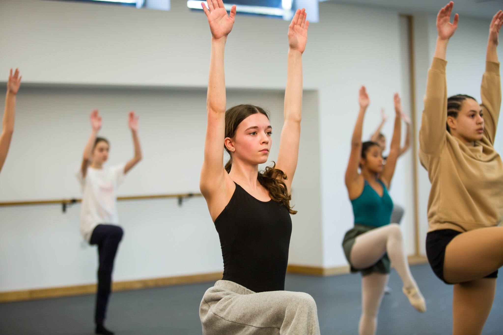

Technical技术线索
通过中心训练、地面训练、移动组合、跳跃与空间变化，帮助学生建立安全、高效、清晰的现当代舞技术能力。
Contemporary Dance Pathway
一条以技术、表演与创造力为核心的现当代舞学习路径。
在 JIAJING BALLET，Rambert Grades 帮助学生从古典芭蕾的身体基础出发，接触更开放的身体语言，学习用动作表达想法、情绪与个人声音。

Overview
Rambert Grades 是一套 Creative Contemporary Dance 等级课程与考试体系。它的训练材料由舞蹈教育与表演领域的专家开发，表演素材来自 Matthew Bourne、Hofesh Shechter、ZooNation 等当代舞台创作者与公司。
它的核心不是把学生训练成同一种样子，而是帮助每个学生在结构清晰的训练中找到自己的身体声音，发展创造力、自信、合作能力与更广阔的舞蹈素养。
通过中心训练、地面训练、移动组合、跳跃与空间变化，帮助学生建立安全、高效、清晰的现当代舞技术能力。
学生会学习由知名编舞家创作的 solo，并被鼓励加入个人理解与诠释，体验更接近专业舞台作品的表演训练。
通过图像、诗歌、音乐、故事或其他刺激物进入即兴与小组创编。课程重视创作过程，而不只是最后的成品。
Rambert Heritage
Rambert 是由 Rambert School of Ballet and Contemporary Dance、Rambert dance company 与 Rambert Grades 组成的艺术与教育共同体。Rambert School 于 1920 年创立，Rambert dance company 也将在 2026 年迎来百年历史。
Rambert Grades 于 2019 年成立，目标是把专业舞团、学校与艺术家的经验转化为面向下一代学生的现当代舞训练与认证体系。

What Students Learn
Rambert Grades 的价值不只在于“学一套现代舞组合”。它通过技术、表演与创造三条线索，让学生同时发展身体能力、艺术表达、沟通合作和自我认同。
从 floorwork 到 travelling sequences，学生会逐步建立协调性、灵活度、力量、身体意识与安全移动的能力。
学生被鼓励进行 personal interpretation，不只是完成动作，而是理解动作如何承载情绪、角色、观点与音乐。
在开放但有结构的创作任务中，学生学习提出想法、尝试、修改、合作，也学习相信自己的独特表达。
Creative Strand 常常需要小组协作。学生在分享、倾听、回应与共同创作中，发展舞蹈之外也重要的沟通能力。
Rambert Grades 鼓励每个学生以自己的方式成功。课堂不追求单一模板，而是帮助学生看见自己能贡献什么。
课程帮助学生理解身体、建立协调和灵活性，也支持他们把舞蹈作为长期、健康、有情绪价值的生活方式。




Inside the Class
Rambert Grades 的课堂通常包含 Technical exercises、Performance Strand solo 与 Creative work。音乐并不固定，老师和学生可以根据课堂目标、情绪和文化风格进行选择，让训练更接近真实的舞蹈行业环境。
Examinations & Qualifications
Rambert Grades 考试以支持性的方式庆祝学生进步。考试通常由老师在学生熟悉的环境中分组录制，让学生在更友好、稳定的状态下呈现学习成果。
学生完成考试后会获得证书，成绩包括 pass、merit、distinction 与 distinction*。Grades 6、7、8 的资格还受到 Ofqual 监管，并可获得 UCAS points，为未来升学与更广泛的发展提供支持。
芭蕾帮助学生建立线条、控制和基础结构；现当代舞则帮助学生打开地面、重心、流动、即兴和个人表达。两者不是互相替代，而是让学生拥有更完整的身体语言。
The JIAJING BALLET Way
我们不会把 Rambert Grades 变成“现代舞考级”。它会和 ABT NTC、dance literacy、即兴、作品欣赏和舞者健康理念一起，帮助学生既有清晰技术，也有表达能力、创造力和长期学习的信心。
学生在保持芭蕾基础的同时，学习更多重心、地面、动力与空间的可能性。
通过即兴和小组任务，让学生逐渐学会把想法变成身体语言。
课程鼓励学生发展自己的解读方式，在同一套训练中保留个体声音。
从芭蕾教室走向剧场、现代舞、音乐剧、影视舞蹈和跨学科艺术。
Note: JIAJING BALLET is an independent studio. Rambert Grades and related images / marks belong to their respective rights holders and should be used only with appropriate permission or replaced with authorized studio materials before public launch.
Start Here